九江万家幼儿园 成都市双流区九江万家幼儿园 2019-06-06 15:18 发表于四川

浓
情
端
午
一
见
粽
情
高咏楚词酬午日，
天涯节序匆匆。
榴花不似舞裙红。
无人知此意，
歌罢满帘风。

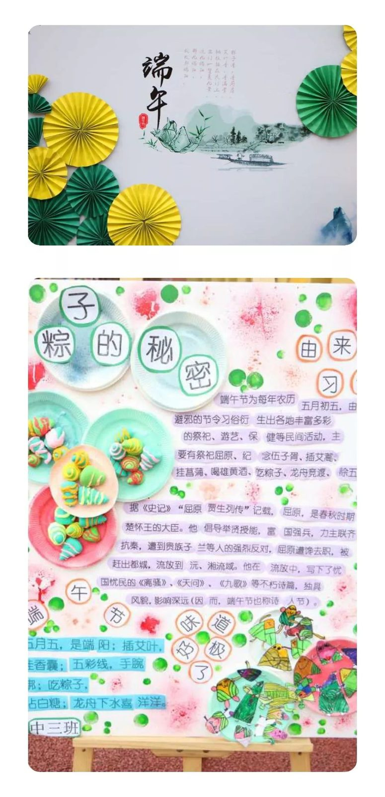
汉服文化
端午节习俗
农历五月初五
绑上头巾，带上头冠，系上斜襟
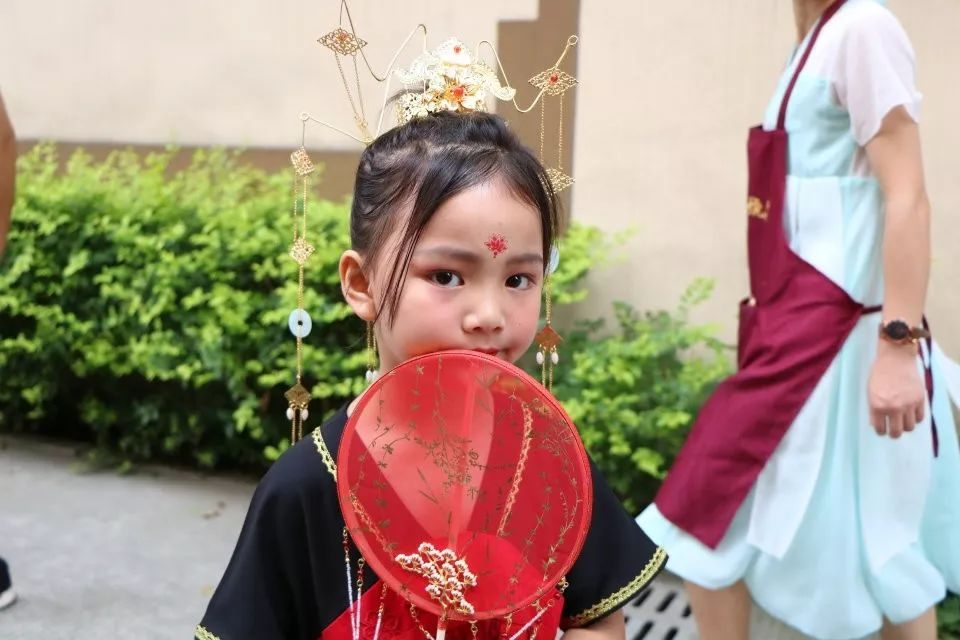
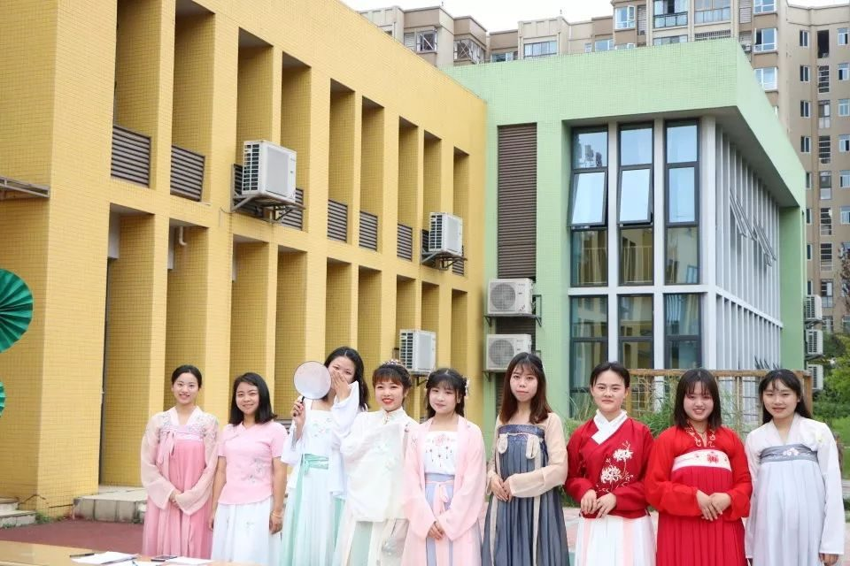

朱砂启智，毛笔启蒙
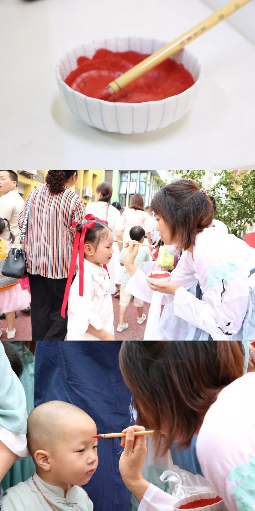
美食街会
美丽老师化身厨娘
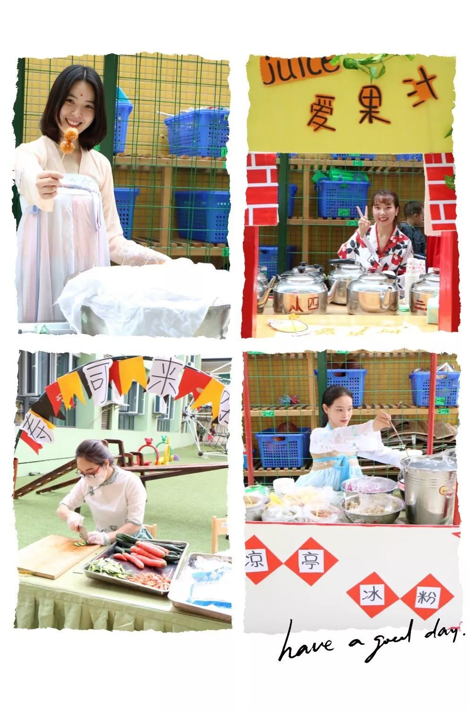
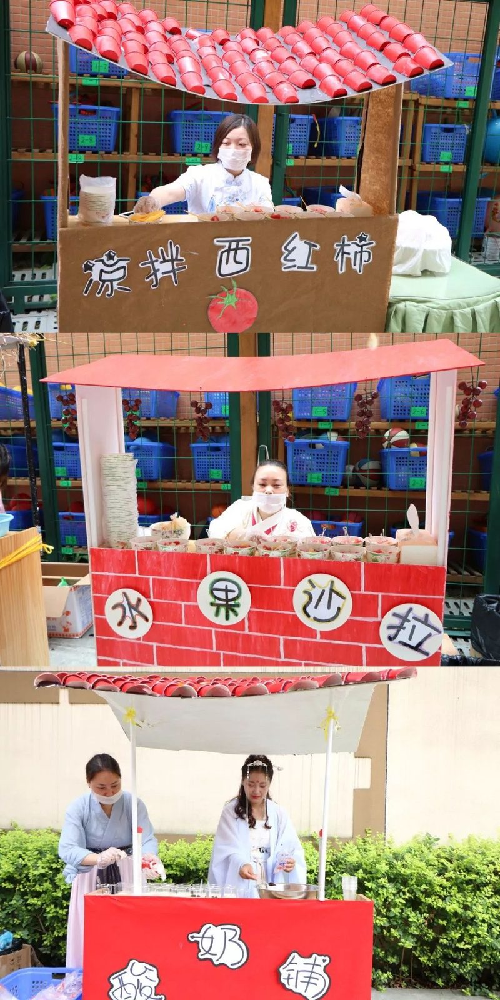
能干家长一同上阵
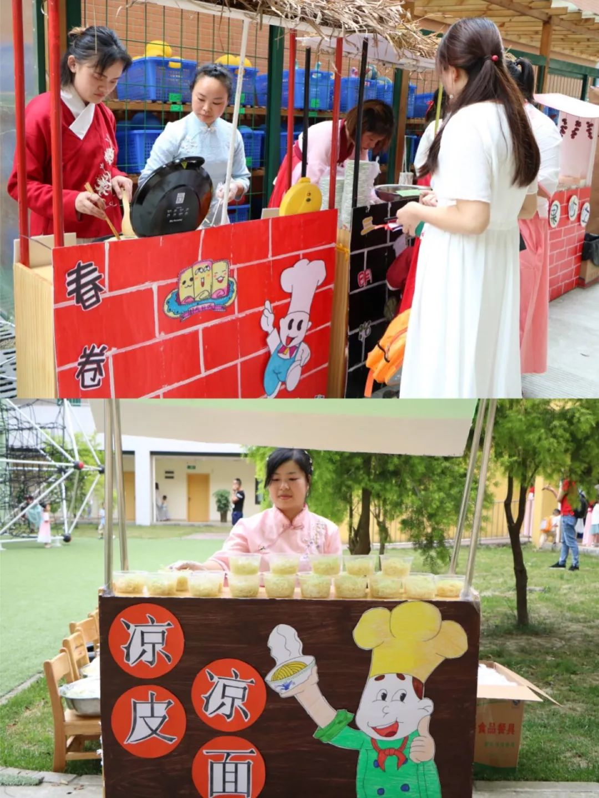
美味出锅
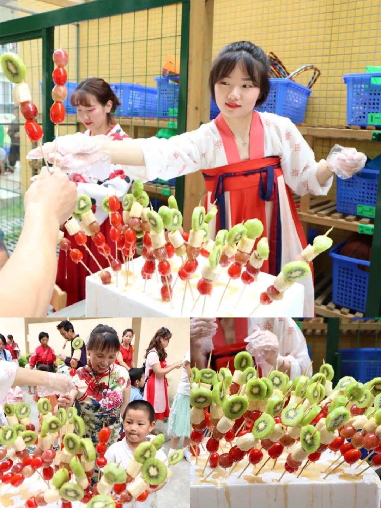

美食现场直播
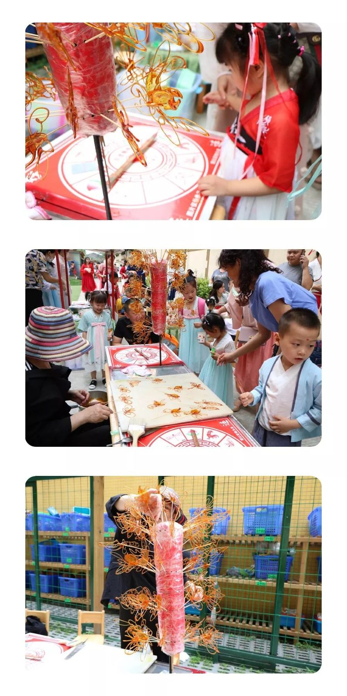

细节展现创意，精致呈现完美
“美食街”让孩子们享受了视觉的欢愉、味觉的快乐，更懂得了“一粟一米，当思来之不易“的道理。
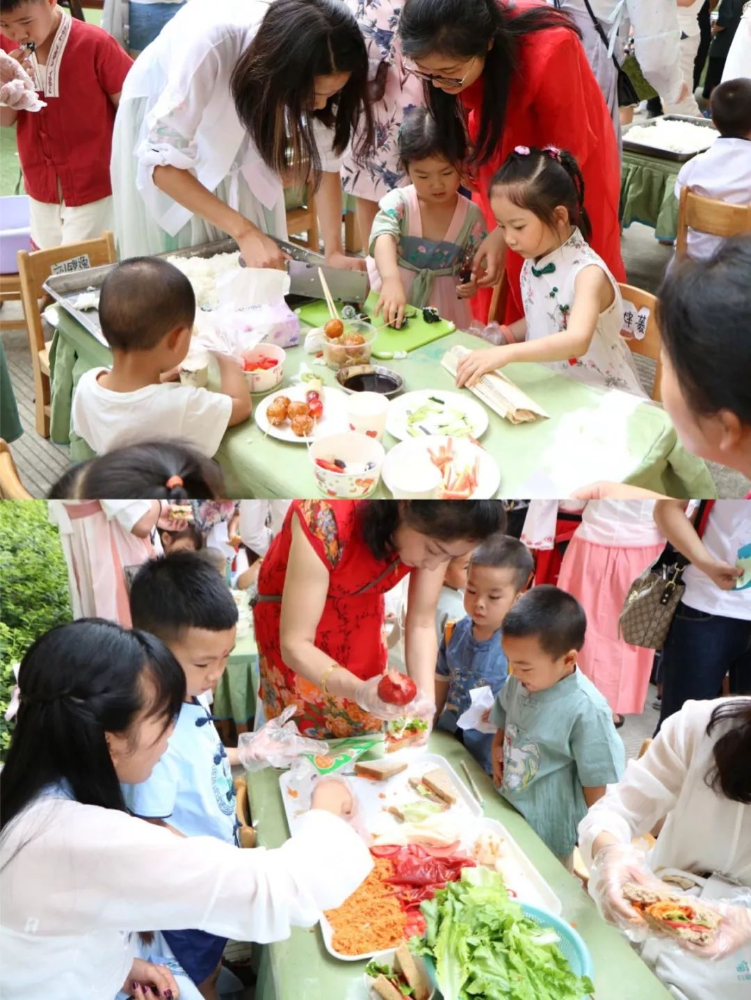
民间游戏
01
保龄球
知否知否，可否投中？
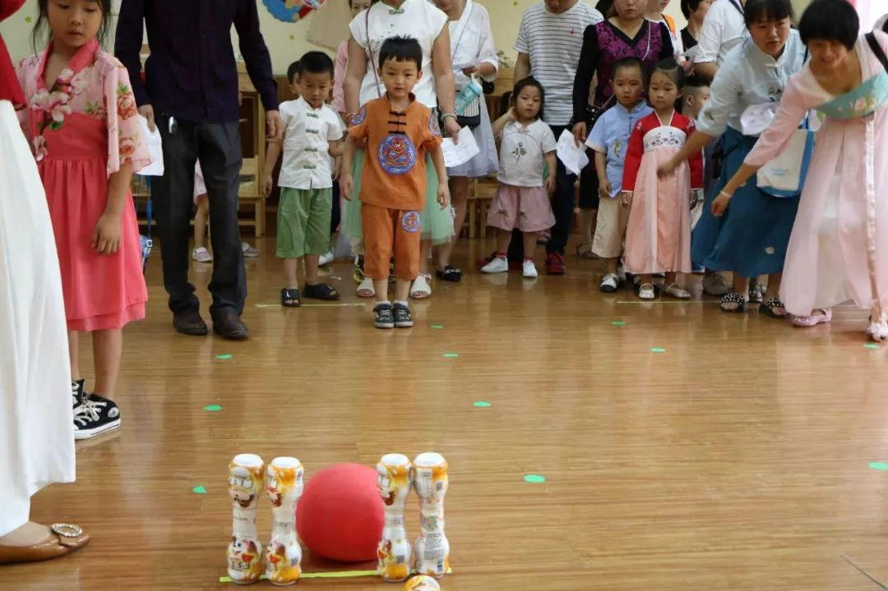
02
缝香包
艾草、碎布、针线......

03
编手链
小手要加油哦！靠你啦!

此次端午节活动让家长和孩子共同走进校园，了解传统文化，然后与孩子共同游戏，共享美食，增进了亲子之间的感情。

THE END


阅读 551
分享 收藏
赞 27